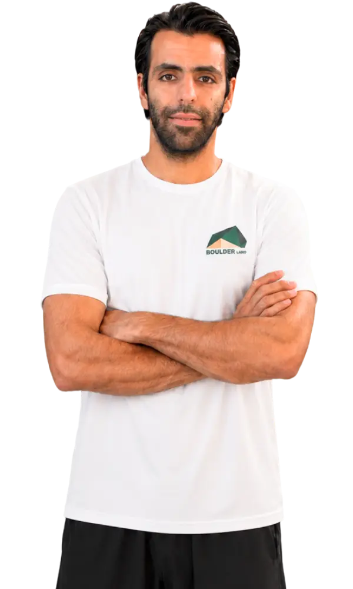

بنیانگذار و سرمربی بلدرلند · طراح رسمی فدراسیون جهانی سنگنوردی


شروع سنگنوردی حرفهای روی دیوارههای سالنی و اولین صعودهای جدی که شالودهی این مسیر را ساختند.

راهیابی به تیم ملی سنگنوردی و حضور در اردوها و رقابتهای سطح اول کشور.

کسب مدال قهرمانی مسابقات کشوری بولدرینگ؛ نقطهی عطفی که نام او را سر زبانها انداخت.

سالها ملیپوشی و ثبت صعودهای شاخص در دیوارههای طبیعی و مسابقات بینالمللی.
بیش از ده سال تربیت سنگنورد در همهی سطوح، از کودکان تا ورزشکاران آمادهی مسابقه. (متن نمونه؛ قابل ویرایش برای هر مربی.)
روی هر مدرک بزنید تا باز شود. (تصاویر نمونهاند؛ با اسکن مدارک واقعی جایگزین شوند.)
سبکها و زمینههایی که مربی در آنها تخصص و تجربهی عملی دارد.